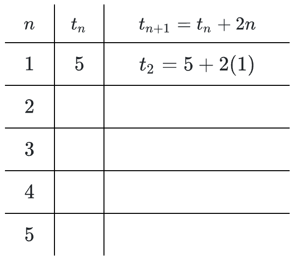

Calculate the sum of each of the following infinite geometric series. If the sum is “\(\infty\),” explain why.
\(1+\frac{1}{2}+\frac{1}{4}+\frac{1}{8}+\cdots\)
\(16+4+1+\frac{1}{4}+\frac{1}{16}+\cdots\)
\(a+0.9a+0.81a+0.729a+\cdots\)
\(1+1.1+1.21+1.331+\cdots\)
Use the technique from problem 12-43 to write the fractional equivalents of the following decimals. Use a calculator to verify your answers.
\(0.5555\ldots\)
\(0.7777\ldots\)
\(0.9999\ldots\)
Fill in the values in the table to help you determine the first five terms in the sequence:
\(t_{n+1}=t_n+2n;\ t_1=5\)

Write the equation of each conic described below.
A circle centered at \((5,1)\) with a circumference of \(40\pi\).
An ellipse that has foci at \((3,0)\) and \((-3,0)\) and a major axis of length \(10\).
Plot each of the given complex numbers in parts (a) and (b) and state the modulus and argument of the number. Then use your answer from part (a) to complete part (c).
\(z=5-4i\)
\(w=-3+7i\)
Evaluate \(z^{2/3}\).
Rewrite each of the following expressions as a single, simplified fraction.
\(xy^{-1}-yx^{-1}\)
\((x^{-1}-x)(x^{-1}+x)\)
\(\frac{y^{-2}-1}{y^{-2}}\)
\(\frac{1}{x-y}+\frac{1}{x+y}\)
Sketch the graph of \(p(x)=-(x+55)(x+30)^2(x)^3(x-35)\) without using a graphing calculator. Do not scale your axes, but be sure to label the important points.
Let \(z=\cos(78^\circ)+i\sin(78^\circ)\) and \(w=15(\cos(174^\circ)+i\sin(174^\circ))\). Compute:
\(zw\)
\(\frac{w}{z}\)
Determine the sum of the series \(100+100(1.005)+100(1.005)^2+\cdots+100(1.005)^{11}\).
Casey wants to know the fractional equivalent of \(0.36363636\ldots\). She writes the number as \(0.3+0.06+0.003+0.0006+\ldots\). She sees that the first term is \(0.3\), but she cannot figure out the common ratio. What is Casey’s mistake? Help her solve her problem.
A bank is advertising an annual interest of \(1.5\%\) on a particular savings account, but the money must stay in the account for 10 years. How long will it take an investment to double in this situation?
Calculate the sum of the odd numbers between \(100\) and \(300\). Show all of your work.
Graph the parametrically-defined function \(x(t)=-2t+1\), \(y(t)=t^2\) for \(-2\le t\le2\). Label the \(t\)-values on the graph.
Use De Moivre’s Theorem to evaluate \(z^6\) for \(z=2\left(\cos\left(\frac{\pi}{6}\right)+i\sin\left(\frac{\pi}{6}\right)\right)\).
One angle of a triangle measures \(70^\circ\) and the opposite side has a length of \(37.2\) feet. Another angle of the triangle measures \(30^\circ\). Solve the triangle and calculate its area.
Use \(79\) left endpoint rectangles to approximate the area under \(g(x)=0.7^x+6\) over the interval \(59\le x\le68\).